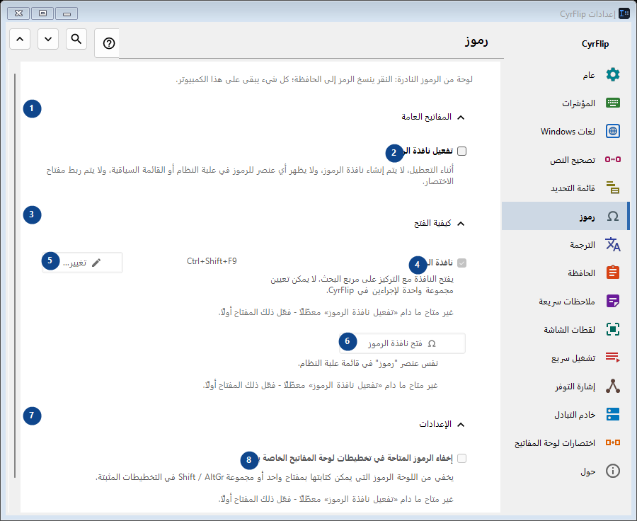
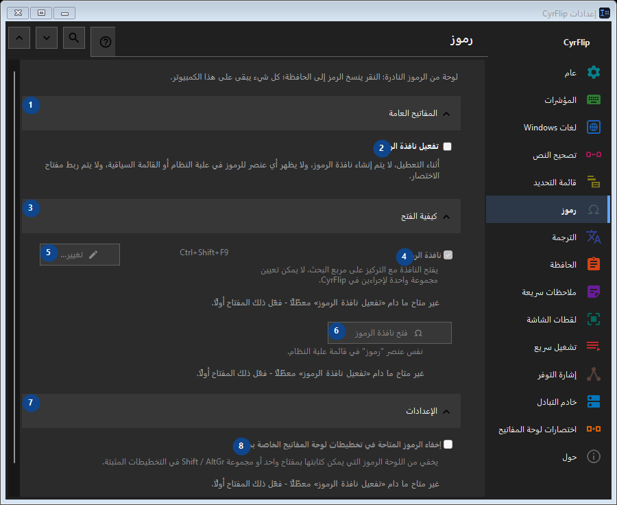

رموز
الغرض
لوحة من الرموز النادرة: النقر ينسخ الرمز إلى الحافظة؛ كل شيء يبقى على هذا الكمبيوتر.


ترتيب الاستخدام
تُطبق الإعدادات فورًا. لا يوجد ترتيب إلزامي؛ استخدم المجموعات أدناه.
العناصر
1. المفاتيح العامة
استخدم هذا الأمر لتنفيذ الإجراء المذكور. اقرأ أي طلب تأكيد قبل الموافقة.
اختصاراتك2. تفعيل نافذة الرموز
أثناء التعطيل، لا يتم إنشاء نافذة الرموز، ولا يظهر أي عنصر للرموز في علبة النظام أو القائمة السياقية، ولا يتم ربط مفتاح الاختصار.
اختصاراتك3. كيفية الفتح
استخدم هذا الأمر لتنفيذ الإجراء المذكور. اقرأ أي طلب تأكيد قبل الموافقة.
اختصاراتك4. نافذة الرموز
غير متاح ما دام «تفعيل نافذة الرموز» معطّلًا - فعّل ذلك المفتاح أولًا. هذا العنصر غير متاح حاليًا. فعّل الميزة أو اختر إدخالًا أولًا.
اختصاراتك5. تغيير - نافذة الرموز
غير متاح ما دام «تفعيل نافذة الرموز» معطّلًا - فعّل ذلك المفتاح أولًا. هذا العنصر غير متاح حاليًا. فعّل الميزة أو اختر إدخالًا أولًا.
اختصاراتك6. فتح نافذة الرموز
غير متاح ما دام «تفعيل نافذة الرموز» معطّلًا - فعّل ذلك المفتاح أولًا. هذا العنصر غير متاح حاليًا. فعّل الميزة أو اختر إدخالًا أولًا.
اختصاراتك7. الإعدادات
استخدم هذا الأمر لتنفيذ الإجراء المذكور. اقرأ أي طلب تأكيد قبل الموافقة.
اختصاراتك8. إخفاء الرموز المتاحة في تخطيطات لوحة المفاتيح الخاصة بي
غير متاح ما دام «تفعيل نافذة الرموز» معطّلًا - فعّل ذلك المفتاح أولًا. هذا العنصر غير متاح حاليًا. فعّل الميزة أو اختر إدخالًا أولًا.
اختصاراتك